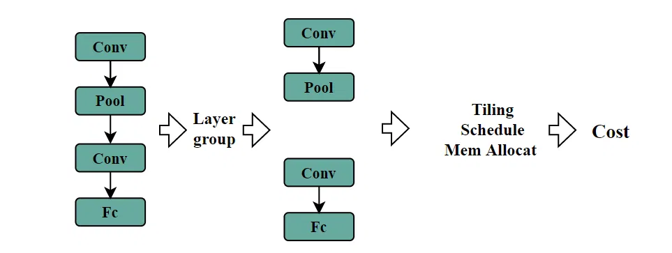
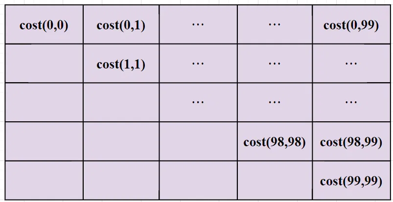
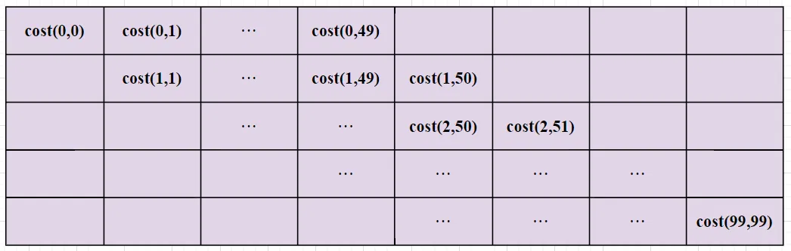

# 前言
本篇介绍 AI 编译领域 layer-group 算法。
本篇文章参考过 《超强干货！地平线编译器大牛的编译优化实践总结》，《Arm 周易编译器工程》，《算能 TPU layer group 讲解》，《算能 TPU 视频讲解》 等文章和工程，欢迎大家参考。
作为初学者，错误在所难免，还望不吝赐教。
# Layer group
如图所示，AI 编译优化的基本流程是 1. 图优化 (算子融合，常量折叠等) 2. 拆分 (layer group 和 tiling) 3. 并行和调度。最后得到当前编译的时间消耗。

在 AI 编译领域，LayerGroup 指的是将神经网络中的多个层（layers (Operator) ）组合成一个逻辑单元或模块的过程。
一般而言设备的运行内存很大，比如电脑的运行内存 16GB，但是它的速度比较慢，我们把它叫做 Global Memory。而做神经网络推理的专用 NPU 芯片，它的高速缓存速度很快，但是空间可能只有几 MB，我们把它叫做 Cache。我们无法将网络模型所有 layer 全部加载到 cache 中，那么意味着每个算子都需要 Cache 和外部 Global Memory 的交互，load 输入数据、store 结果。
所以需要将网络拆分成小的 layer group。一般默认只有进入和退出 layer group 的时候，才需要和外部的 Global Memory 做 Load/Store 操作去交互。把需要的数据 load 进来，将结果数据 store 出去。layer group 减少了 Load/Store 操作，同时 layer group 也是后续 tiling、调度等操作的基本单元，降低了问题复杂度。
# 动态规划搜索
还是这张图，如何划分 layer group 呢？图里面只有四个算子，可以 1,2 划分一组，3,4 划分一组；也可以 1 划为一组，2,3,4 划分另一组；甚至 1,2,3,4 全部划分为一组。不同的划分方式，最后得到的 Cost 也不同。
为了找到最优的划分方式，不得不搜索所有划分方案。
假设网络有 n 层，则 n 层中间有 n-1 个间隔。选取 0 个间隔，也就是 n 层全部划分为一组，是 C (n-1, 0)；选取 1 个间隔，也就是分成两组，是 C (n-1,1)；选取 2 个间隔，也就是划分三组，是 C (n-1,2)；以此类推， C (n-1, 0)+C (n-1,1)+C (n-1,2)+……+C (n-1,n-1)，根据二项式定理，需要 2^(n-1) 次搜索。
指数式增长计算量太大，是不可接受的。
可以采用动态规划的思想来减少搜索次数。
我们以 100 层网络为例。设 f(n) 为从第 0 层到达第 n 层最短用时。令 f(-1) = 0 ， cost(x,y) 为从 x 层到 y 层作为一个 group 的开销。则：
f(0) = cost(0,0) | |
f(1) = min( f(-1)+cost(0,1) ; f(0)+cost(1,1) ) | |
f(2) = min( f(-1)+cost(0,2) ; f(0)+cost(1,2) ; f(11)+cost(2,2) ) | |
... | |
f(99) = min( f(-1)+cost(0,99) ; f(0)+cost(1,99) ; ... ; f(98)+cost(99,99) ) |
这就需要提前计算一个 cost table。

cost table 如图所示。我们要做的就是以从 x 层到 y 层作为一个 group，计算开销 cost(x,y) 并保存下来。对于一个 n 层的网络来说，需要搜索的 layer group 数量为： 1+2+…+n = n (n+1)/2 。搜索次数从原来的 2^(n-1) 指数函数，已经降到幂函数。
但是当网络层数过多时，搜索量还是很大，可以限制最大搜索长度，例如最长支持 50 层，那么 cost table 就变成下面这个样子：

现在对于 n 层网络，搜索数量降到 50*n 。
还可以启发式的剪枝优化，优化掉明显不会有收益的分支，进一步降低搜索的时间消耗。
# 后记
本博客目前以及可预期的将来都不会支持评论功能。各位大侠如若有指教和问题，可以在我的 github 项目 或随便一个项目下提出 issue，并指明哪一篇博客，我看到一定及时回复！
runtime_mod